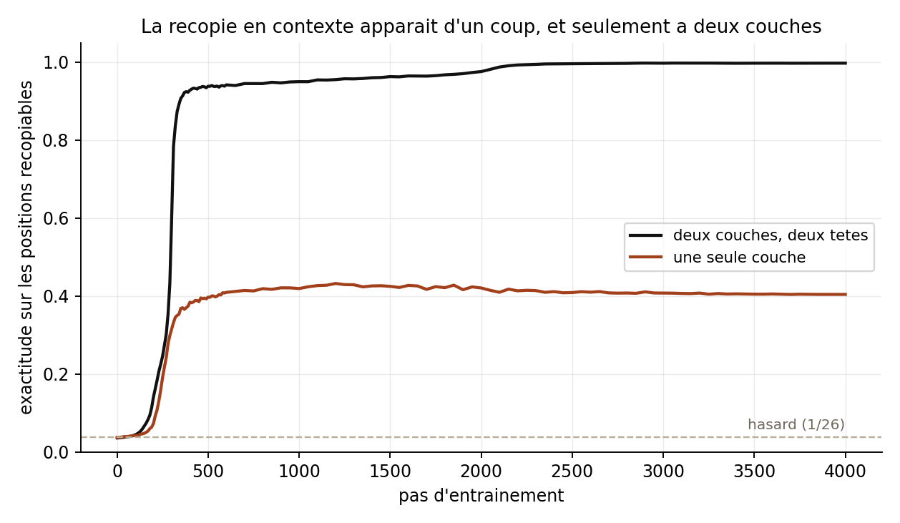

Une règle que le modèle ne peut pas mémoriser
Pour observer un mécanisme, il faut une tâche dont on connaît la solution. Celle-ci tient en une phrase : on tire une suite de lettres au hasard, d'une longueur elle-même tirée au hasard entre quatre et douze, et on la répète jusqu'au bout de la séquence. La première occurrence est imprévisible ; tout ce qui suit se déduit du contexte, à condition de retrouver où la lettre courante est déjà apparue et de recopier ce qui la suivait.
Ma première version était fausseJ'avais d'abord fixé la longueur du motif à seize. Un modèle à une seule couche atteignait alors 100 % : il lui suffisait de regarder seize positions en arrière, un simple décalage. Le contrôle négatif ne contrôlait rien. Tirer la période au hasard à chaque exemple supprime ce raccourci.
La capacité arrive d'un coup, et pas à une seule couche
L'entraînement dure 2,3 minutes sur un portable sans carte graphique. Rien ne se passe pendant deux cents pas, puis la recopie apparaît brutalement et sature à 99,7 %. Le même modèle privé d'une couche plafonne à 40,4 % : la recopie en contexte demande deux étages, un pour marquer d'où l'on vient, l'autre pour aller chercher la suite — c'est le circuit décrit par Elhage et ses collègues en 2021, puis par Olsson en 2022, ici reproduit à l'échelle d'un jouet.

Une tête qu'on coupe, et le modèle ne sait plus recopier
On peut désigner les coupables. Chaque tête est désactivée à son tour — sa sortie est mise à zéro — et l'on mesure ce que le modèle perd. On mesure aussi où va son attention : sur le jeton précédent, ou sur les positions qui suivent les occurrences antérieures de la lettre courante.
| Tête coupée | Recopie restante | Att. jeton précédent | Att. induction |
|---|---|---|---|
| couche 0, tête 1 | 0,247 | 0,91 | 0,04 |
| couche 0, tête 0 | 0,921 | 0,03 | 0,12 |
| couche 1, tête 0 | 0,955 | 0,00 | 0,69 |
| couche 1, tête 1 | 0,981 | 0,00 | 0,70 |
| couche 1 entière | 0,055 | — | — |
La lecture est nette. La tête 1 de la couche 0 place 91 % de son attention sur le jeton précédent : c'est elle qui inscrit, dans chaque position, l'identité de celle qui la précède. La couper fait tomber la recopie de 99,5 % à 24,7 %. Les deux têtes de la couche 1, elles, portent près de 70 % de leur attention sur le motif d'induction — mais les couper une par une ne coûte presque rien (−4 et −1,4 points) : elles se doublonnent. Coupées ensemble, la recopie tombe à 5,5 %. Autrement dit : une fonction, deux exemplaires, et un étage préparatoire sans lequel rien ne marche.
04 · Un détail qui n'en est pas unLe modèle parie sur le retour du motif
Sur les positions dites imprévisibles, le modèle obtient 14 % de réussite, bien au-dessus du hasard (3,8 %). En regardant de plus près, ces 14 % viennent d'un seul endroit : la frontière du motif, la position où la répétition commence. Là, le modèle a raison 93,9 % du temps ; partout ailleurs, il est exactement au hasard (3,8 %).
Il a donc appris une stratégie de pari : tant qu'aucune répétition n'a été détectée, proposer la première lettre de la suite. C'est faux presque partout, et juste précisément là où ça compte. Un chiffre qui ressemblait à du bruit décrivait en fait un comportement.
Enfin, le modèle exécuté dans cette page est bien celui qui a été entraîné : sur six séquences et 192 positions, l'écart maximal entre le portage JavaScript et PyTorch est de 10⁻⁵ sur les logits comme sur les cartes d'attention, y compris après ablation, et aucune prédiction ne diffère.